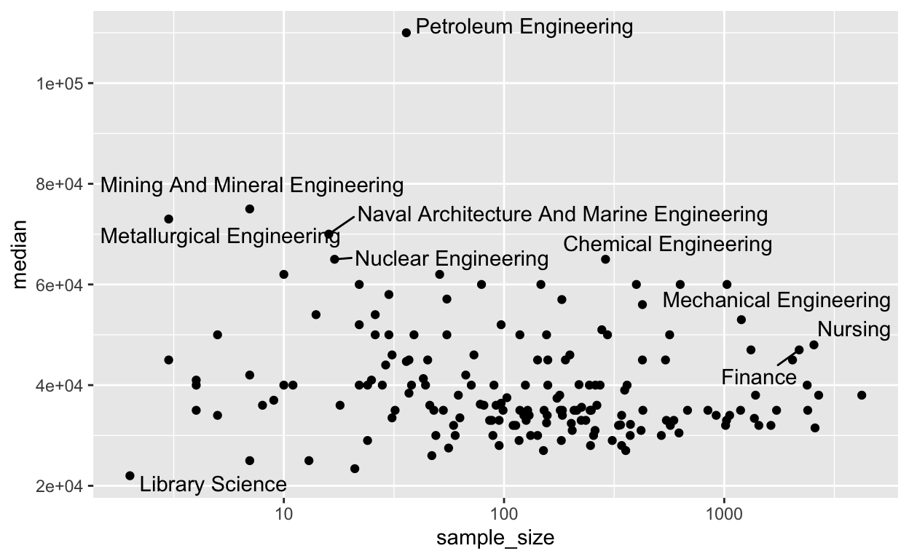
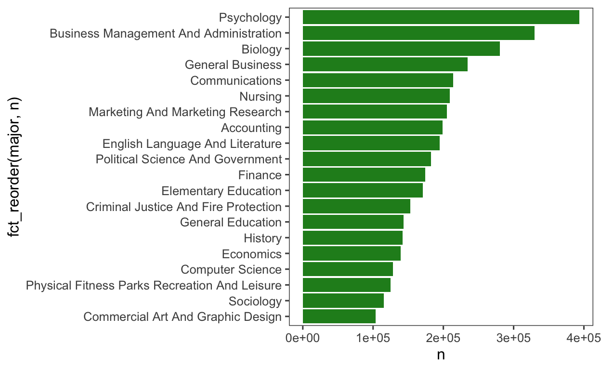
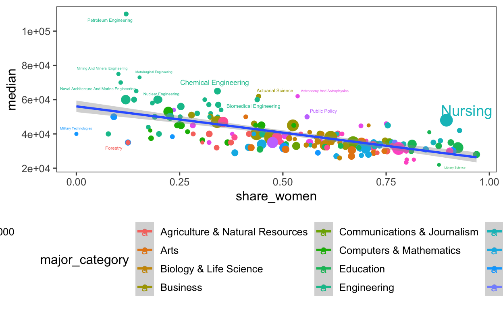

2018 Week 29 - College Major
knitr::opts_chunk$set(echo = TRUE)
# load packages
library(tidytuesdayR)
library(tidyverse)
# to download data
tt_data <- tt_load(2018, week = 29)
tt_data$`recent-grads`
# to view readme
readme(tt_data)
# to see available datasets:
print(tt_data) # recent-grads
recent_grads <- tt_data$`recent-grads`
grads_processed <- recent_grads %>%
janitor::clean_names() %>%
mutate(major = str_to_title(major))
# check for na values
sum(is.na(grads_processed))
[1] 4[1] 541 714 887 1233grads_processed[541,]
# A tibble: 1 x 21
rank major_code major total men women major_category share_women
<dbl> <dbl> <chr> <dbl> <dbl> <dbl> <chr> <dbl>
1 NA NA <NA> NA NA NA <NA> NA
# with 13 more variables: sample_size <dbl>, employed <dbl>,
# full_time <dbl>, part_time <dbl>, full_time_year_round <dbl>,
# unemployed <dbl>, unemployment_rate <dbl>, median <dbl>,
# p25th <dbl>, p75th <dbl>, college_jobs <dbl>,
# non_college_jobs <dbl>, low_wage_jobs <dbl>grads_processed[714,]
# A tibble: 1 x 21
rank major_code major total men women major_category share_women
<dbl> <dbl> <chr> <dbl> <dbl> <dbl> <chr> <dbl>
1 NA NA <NA> NA NA NA <NA> NA
# with 13 more variables: sample_size <dbl>, employed <dbl>,
# full_time <dbl>, part_time <dbl>, full_time_year_round <dbl>,
# unemployed <dbl>, unemployment_rate <dbl>, median <dbl>,
# p25th <dbl>, p75th <dbl>, college_jobs <dbl>,
# non_college_jobs <dbl>, low_wage_jobs <dbl>grads_processed[887,]
# A tibble: 1 x 21
rank major_code major total men women major_category share_women
<dbl> <dbl> <chr> <dbl> <dbl> <dbl> <chr> <dbl>
1 NA NA <NA> NA NA NA <NA> NA
# with 13 more variables: sample_size <dbl>, employed <dbl>,
# full_time <dbl>, part_time <dbl>, full_time_year_round <dbl>,
# unemployed <dbl>, unemployment_rate <dbl>, median <dbl>,
# p25th <dbl>, p75th <dbl>, college_jobs <dbl>,
# non_college_jobs <dbl>, low_wage_jobs <dbl>grads_processed[1233, ]
# A tibble: 1 x 21
rank major_code major total men women major_category share_women
<dbl> <dbl> <chr> <dbl> <dbl> <dbl> <chr> <dbl>
1 NA NA <NA> NA NA NA <NA> NA
# with 13 more variables: sample_size <dbl>, employed <dbl>,
# full_time <dbl>, part_time <dbl>, full_time_year_round <dbl>,
# unemployed <dbl>, unemployment_rate <dbl>, median <dbl>,
# p25th <dbl>, p75th <dbl>, college_jobs <dbl>,
# non_college_jobs <dbl>, low_wage_jobs <dbl>[1] 0Note:
Simplify the dataset again:
cleaned_data <- grads_processed_2 %>%
select(rank, major_category, major, total, men, women, share_women, sample_size, median, p25th, p75th ) %>%
mutate(pct_sample = sample_size/total*100)
glimpse(cleaned_data)
Rows: 172
Columns: 12
$ rank <dbl> 1, 2, 3, 4, 5, 6, 7, 8, 9, 10, 11, 12, 13, 14
$ major_category <chr> "Engineering", "Engineering", "Engineering",
$ major <chr> "Petroleum Engineering", "Mining And Mineral
$ total <dbl> 2339, 756, 856, 1258, 32260, 2573, 3777, 1792
$ men <dbl> 2057, 679, 725, 1123, 21239, 2200, 2110, 832,
$ women <dbl> 282, 77, 131, 135, 11021, 373, 1667, 960, 109
$ share_women <dbl> 0.1205643, 0.1018519, 0.1530374, 0.1073132, 0
$ sample_size <dbl> 36, 7, 3, 16, 289, 17, 51, 10, 1029, 631, 399
$ median <dbl> 110000, 75000, 73000, 70000, 65000, 65000, 62
$ p25th <dbl> 95000, 55000, 50000, 43000, 50000, 50000, 530
$ p75th <dbl> 125000, 90000, 105000, 80000, 75000, 102000,
$ pct_sample <dbl> 1.5391193, 0.9259259, 0.3504673, 1.2718601, 0# 16 types of major category
cleaned_data %>%
select(major_category) %>%
group_by(major_category) %>%
summarise(n = n())
# A tibble: 16 x 2
major_category n
<chr> <int>
1 Agriculture & Natural Resources 9
2 Arts 8
3 Biology & Life Science 14
4 Business 13
5 Communications & Journalism 4
6 Computers & Mathematics 11
7 Education 16
8 Engineering 29
9 Health 12
10 Humanities & Liberal Arts 15
11 Industrial Arts & Consumer Services 7
12 Interdisciplinary 1
13 Law & Public Policy 5
14 Physical Sciences 10
15 Psychology & Social Work 9
16 Social Science 9# A tibble: 172 x 2
major n
<chr> <int>
1 Accounting 1
2 Actuarial Science 1
3 Advertising And Public Relations 1
4 Aerospace Engineering 1
5 Agricultural Economics 1
6 Agriculture Production And Management 1
7 Animal Sciences 1
8 Anthropology And Archeology 1
9 Applied Mathematics 1
10 Architectural Engineering 1
# with 162 more rows# see unique values for character columns
cleaned_data %>%
select_if(is_character) %>%
lapply(., function(x) unique(x))
$major_category
[1] "Engineering"
[2] "Business"
[3] "Physical Sciences"
[4] "Law & Public Policy"
[5] "Computers & Mathematics"
[6] "Industrial Arts & Consumer Services"
[7] "Arts"
[8] "Health"
[9] "Social Science"
[10] "Biology & Life Science"
[11] "Education"
[12] "Agriculture & Natural Resources"
[13] "Humanities & Liberal Arts"
[14] "Psychology & Social Work"
[15] "Communications & Journalism"
[16] "Interdisciplinary"
$major
[1] "Petroleum Engineering"
[2] "Mining And Mineral Engineering"
[3] "Metallurgical Engineering"
[4] "Naval Architecture And Marine Engineering"
[5] "Chemical Engineering"
[6] "Nuclear Engineering"
[7] "Actuarial Science"
[8] "Astronomy And Astrophysics"
[9] "Mechanical Engineering"
[10] "Electrical Engineering"
[11] "Computer Engineering"
[12] "Aerospace Engineering"
[13] "Biomedical Engineering"
[14] "Materials Science"
[15] "Engineering Mechanics Physics And Science"
[16] "Biological Engineering"
[17] "Industrial And Manufacturing Engineering"
[18] "General Engineering"
[19] "Architectural Engineering"
[20] "Court Reporting"
[21] "Computer Science"
[22] "Electrical Engineering Technology"
[23] "Materials Engineering And Materials Science"
[24] "Management Information Systems And Statistics"
[25] "Civil Engineering"
[26] "Construction Services"
[27] "Operations Logistics And E-Commerce"
[28] "Miscellaneous Engineering"
[29] "Public Policy"
[30] "Environmental Engineering"
[31] "Engineering Technologies"
[32] "Miscellaneous Fine Arts"
[33] "Geological And Geophysical Engineering"
[34] "Nursing"
[35] "Finance"
[36] "Economics"
[37] "Business Economics"
[38] "Industrial Production Technologies"
[39] "Nuclear, Industrial Radiology, And Biological Technologies"
[40] "Accounting"
[41] "Mathematics"
[42] "Computer And Information Systems"
[43] "Physics"
[44] "Medical Technologies Technicians"
[45] "Information Sciences"
[46] "Statistics And Decision Science"
[47] "Applied Mathematics"
[48] "Pharmacology"
[49] "Oceanography"
[50] "Engineering And Industrial Management"
[51] "Medical Assisting Services"
[52] "Mathematics And Computer Science"
[53] "Computer Programming And Data Processing"
[54] "Cognitive Science And Biopsychology"
[55] "School Student Counseling"
[56] "International Relations"
[57] "General Business"
[58] "Architecture"
[59] "International Business"
[60] "Pharmacy Pharmaceutical Sciences And Administration"
[61] "Molecular Biology"
[62] "Miscellaneous Business & Medical Administration"
[63] "Agriculture Production And Management"
[64] "General Agriculture"
[65] "Miscellaneous Engineering Technologies"
[66] "Mechanical Engineering Related Technologies"
[67] "Genetics"
[68] "Miscellaneous Social Sciences"
[69] "United States History"
[70] "Industrial And Organizational Psychology"
[71] "Agricultural Economics"
[72] "Physical Sciences"
[73] "Military Technologies"
[74] "Chemistry"
[75] "Electrical, Mechanical, And Precision Technologies And Production"
[76] "Business Management And Administration"
[77] "Marketing And Marketing Research"
[78] "Political Science And Government"
[79] "Geography"
[80] "Microbiology"
[81] "Computer Administration Management And Security"
[82] "Biochemical Sciences"
[83] "Botany"
[84] "Computer Networking And Telecommunications"
[85] "Geology And Earth Science"
[86] "Human Resources And Personnel Management"
[87] "Pre-Law And Legal Studies"
[88] "Miscellaneous Health Medical Professions"
[89] "Public Administration"
[90] "Geosciences"
[91] "Social Psychology"
[92] "Environmental Science"
[93] "Communications"
[94] "Criminal Justice And Fire Protection"
[95] "Commercial Art And Graphic Design"
[96] "Journalism"
[97] "Multi-Disciplinary Or General Science"
[98] "Advertising And Public Relations"
[99] "Area Ethnic And Civilization Studies"
[100] "Special Needs Education"
[101] "Physiology"
[102] "Criminology"
[103] "Nutrition Sciences"
[104] "Health And Medical Administrative Services"
[105] "Communication Technologies"
[106] "Transportation Sciences And Technologies"
[107] "Natural Resources Management"
[108] "Neuroscience"
[109] "Multi/Interdisciplinary Studies"
[110] "Atmospheric Sciences And Meteorology"
[111] "Forestry"
[112] "Soil Science"
[113] "General Education"
[114] "History"
[115] "French German Latin And Other Common Foreign Language Studies"
[116] "Intercultural And International Studies"
[117] "Social Science Or History Teacher Education"
[118] "Community And Public Health"
[119] "Mathematics Teacher Education"
[120] "Educational Administration And Supervision"
[121] "Health And Medical Preparatory Programs"
[122] "Miscellaneous Biology"
[123] "Biology"
[124] "Sociology"
[125] "Mass Media"
[126] "Treatment Therapy Professions"
[127] "Hospitality Management"
[128] "Language And Drama Education"
[129] "Linguistics And Comparative Language And Literature"
[130] "Miscellaneous Education"
[131] "Interdisciplinary Social Sciences"
[132] "Ecology"
[133] "Secondary Teacher Education"
[134] "General Medical And Health Services"
[135] "Philosophy And Religious Studies"
[136] "Art And Music Education"
[137] "English Language And Literature"
[138] "Elementary Education"
[139] "Physical Fitness Parks Recreation And Leisure"
[140] "Liberal Arts"
[141] "Film Video And Photographic Arts"
[142] "General Social Sciences"
[143] "Plant Science And Agronomy"
[144] "Science And Computer Teacher Education"
[145] "Psychology"
[146] "Music"
[147] "Physical And Health Education Teaching"
[148] "Art History And Criticism"
[149] "Fine Arts"
[150] "Family And Consumer Sciences"
[151] "Social Work"
[152] "Animal Sciences"
[153] "Visual And Performing Arts"
[154] "Teacher Education: Multiple Levels"
[155] "Miscellaneous Psychology"
[156] "Human Services And Community Organization"
[157] "Humanities"
[158] "Theology And Religious Vocations"
[159] "Studio Arts"
[160] "Cosmetology Services And Culinary Arts"
[161] "Miscellaneous Agriculture"
[162] "Anthropology And Archeology"
[163] "Communication Disorders Sciences And Services"
[164] "Early Childhood Education"
[165] "Other Foreign Languages"
[166] "Drama And Theater Arts"
[167] "Composition And Rhetoric"
[168] "Zoology"
[169] "Educational Psychology"
[170] "Clinical Psychology"
[171] "Counseling Psychology"
[172] "Library Science" # see summary statistics for dbl columns
cleaned_data %>%
select_if(is.numeric) %>%
lapply(., function(x) broom::tidy(summary(x)))
$rank
# A tibble: 1 x 6
minimum q1 median mean q3 maximum
<dbl> <dbl> <dbl> <dbl> <dbl> <dbl>
1 1 44.8 87.5 87.4 130. 173
$total
# A tibble: 1 x 6
minimum q1 median mean q3 maximum
<dbl> <dbl> <dbl> <dbl> <dbl> <dbl>
1 124 4550. 15104 39370. 38910. 393735
$men
# A tibble: 1 x 6
minimum q1 median mean q3 maximum
<dbl> <dbl> <dbl> <dbl> <dbl> <dbl>
1 119 2178. 5434 16723. 14631 173809
$women
# A tibble: 1 x 6
minimum q1 median mean q3 maximum
<dbl> <dbl> <dbl> <dbl> <dbl> <dbl>
1 0 1778. 8386. 22647. 22554. 307087
$share_women
# A tibble: 1 x 6
minimum q1 median mean q3 maximum
<dbl> <dbl> <dbl> <dbl> <dbl> <dbl>
1 0 0.336 0.534 0.522 0.703 0.969
$sample_size
# A tibble: 1 x 6
minimum q1 median mean q3 maximum
<dbl> <dbl> <dbl> <dbl> <dbl> <dbl>
1 2 42 131 358. 339 4212
$median
# A tibble: 1 x 6
minimum q1 median mean q3 maximum
<dbl> <dbl> <dbl> <dbl> <dbl> <dbl>
1 22000 33000 36000 40077. 45000 110000
$p25th
# A tibble: 1 x 6
minimum q1 median mean q3 maximum
<dbl> <dbl> <dbl> <dbl> <dbl> <dbl>
1 18500 24000 27000 29487. 33250 95000
$p75th
# A tibble: 1 x 6
minimum q1 median mean q3 maximum
<dbl> <dbl> <dbl> <dbl> <dbl> <dbl>
1 22000 41750 47000 51387. 58500 125000
$pct_sample
# A tibble: 1 x 6
minimum q1 median mean q3 maximum
<dbl> <dbl> <dbl> <dbl> <dbl> <dbl>
1 0.161 0.660 0.881 0.909 1.12 3.23Which of the survey results had higher sample size?
Plot sample size (x) and median (x), label major
cleaned_data %>%
ggplot(aes(sample_size, median, label = major)) +
geom_point() +
geom_text_repel(aes(label = major)) +
scale_x_log10()

A larger sample size would mean that the survey results were more credible.
Rank median salary in descending order and fct_reorder, ggplot
theme_set(theme_few())
cleaned_data %>%
select(major_category, median) %>%
group_by(major_category) %>%
summarise(median = median(median)) %>%
arrange(desc(median))
# A tibble: 16 x 2
major_category median
<chr> <dbl>
1 Engineering 57000
2 Computers & Mathematics 45000
3 Business 40000
4 Physical Sciences 39500
5 Social Science 38000
6 Biology & Life Science 36300
7 Law & Public Policy 36000
8 Agriculture & Natural Resources 35000
9 Communications & Journalism 35000
10 Health 35000
11 Industrial Arts & Consumer Services 35000
12 Interdisciplinary 35000
13 Education 32750
14 Humanities & Liberal Arts 32000
15 Arts 30750
16 Psychology & Social Work 30000cleaned_data %>%
ggplot(aes(fct_reorder(major_category, median), median)) +
geom_boxplot() +
labs(title = "Distribution of median salary for different major categories",
caption = "Source: American Community Survey 2010-2012",
x = "",
y = "Median Salary") +
scale_y_continuous(labels = scales::comma) +
expand_limits(y = 0) +
coord_flip()
cleaned_data %>%
filter(sample_size>100) %>%
arrange(desc(median)) %>%
slice_head(n=20) %>%
ggplot(aes(fct_reorder(major, median), median, col = major_category)) +
geom_point(size = 2) +
geom_errorbar(aes(ymin = p25th, ymax = p75th)) +
scale_y_continuous(labels = scales::comma) +
expand_limits(y = 0) +
labs(title = "Top 20 Majors by Median Income, with at least 100 people surveyed",
subtitle = "Error bars represent 25th and 75th percentile",
col = "Major Categories",
x = "",
y = "Median Salary",
caption = "Source: Americal Community Survey 2010-2012") +
coord_flip()
cleaned_data %>%
count(major, wt = total, sort = T) %>%
slice_head(n = 20) %>%
ggplot(aes(fct_reorder(major, n), n)) +
geom_col(fill = "forestgreen") +
coord_flip()

x - share women y - median
cleaned_data %>%
ggplot(aes(x = share_women, y = median, label = major,
col = major_category, size = sample_size)) +
geom_point() +
geom_smooth(aes(group = 1), method = "lm") +
geom_text_repel(aes(label = major, force = 0.2)) +
theme(legend.position = "bottom")

Import Singapores data, downloaded from Data.gov.sg
sg <- read_csv("~/Desktop/r-tidyverse/graduate-employment-survey-ntu-nus-sit-smu-suss-sutd.csv")
sg <- read_csv("~/Desktop/r-tidyverse/graduate-employment-survey-ntu-nus-sit-smu-suss-sutd.csv")
Explore the dataset
glimpse(sg)
Rows: 703
Columns: 12
$ year <dbl> 2013, 2013, 2013, 2013, 2013, 2013
$ university <chr> "Nanyang Technological University"
$ school <chr> "College of Business (Nanyang Busi
$ degree <chr> "Accountancy and Business", "Accou
$ employment_rate_overall <chr> "97.4", "97.1", "90.9", "87.5", "9
$ employment_rate_ft_perm <chr> "96.1", "95.7", "85.7", "87.5", "9
$ basic_monthly_mean <chr> "3701", "2850", "3053", "3557", "3
$ basic_monthly_median <chr> "3200", "2700", "3000", "3400", "3
$ gross_monthly_mean <chr> "3727", "2938", "3214", "3615", "3
$ gross_monthly_median <chr> "3350", "2700", "3000", "3400", "3
$ gross_mthly_25_percentile <chr> "2900", "2700", "2700", "3000", "3
$ gross_mthly_75_percentile <chr> "4000", "2900", "3500", "4100", "3[1] 0# convert to numeric
sg_cleaned <- sg
sg_cleaned <- sg_cleaned %>%
mutate(across(c(7:12), as.numeric))
glimpse(sg_cleaned)
Rows: 703
Columns: 12
$ year <dbl> 2013, 2013, 2013, 2013, 2013, 2013
$ university <chr> "Nanyang Technological University"
$ school <chr> "College of Business (Nanyang Busi
$ degree <chr> "Accountancy and Business", "Accou
$ employment_rate_overall <chr> "97.4", "97.1", "90.9", "87.5", "9
$ employment_rate_ft_perm <chr> "96.1", "95.7", "85.7", "87.5", "9
$ basic_monthly_mean <dbl> 3701, 2850, 3053, 3557, 3494, 2952
$ basic_monthly_median <dbl> 3200, 2700, 3000, 3400, 3500, 2900
$ gross_monthly_mean <dbl> 3727, 2938, 3214, 3615, 3536, 3166
$ gross_monthly_median <dbl> 3350, 2700, 3000, 3400, 3500, 3125
$ gross_mthly_25_percentile <dbl> 2900, 2700, 2700, 3000, 3100, 2893
$ gross_mthly_75_percentile <dbl> 4000, 2900, 3500, 4100, 3816, 3365max(sg_cleaned$year) # 2018
[1] 2018Transform:
Filter to see year 2018
Need to remove any missing values
Need to recode the degree into smaller number of categories using fct_collapse
Need to remove *, # and ^ using str_replace_all
Need to change to lower case for easier typing using str_to_lower
Need to remove white space in case there are any using trim_ws or str_trim
sg_2018 <- sg_cleaned %>%
filter(year == 2018) %>%
drop_na() %>%
arrange(desc(basic_monthly_median)) %>%
mutate(school = str_replace_all(school, "\\*", ""),
degree = str_replace_all(degree, "\\#", ""),
degree = str_replace_all(degree, "\\^", "")) %>%
mutate(degree = str_to_lower(degree),
degree = trimws(degree)) %>%
mutate(degree_recode = fct_collapse(degree,
accountancy = c("accountancy",
"accountancy (cum laude and above)",
"accountancy and business",
"bachelor of accountancy",
"bachelor of accountancy with honours",
"bachelor of business administration (accountancy)",
"bachelor of business administration (accountancy) (hons)"),
arts = c("art, design & media",
"arts (with education)",
"bachelor of arts",
"bachelor of arts (hons)",
"bachelor of arts (industrial design)",
"bachelor of arts in game design",
"bachelor of arts with honours",
"bachelor of arts with honours in communication design",
"bachelor of arts with honours in interior design",
"bachelor of fine arts in digital art and animation",
"history",
"philosophy"),
bizad = c("bachelor of business administration",
"bachelor of business administration (hons)",
"bachelor of business administration in food business management",
"bachelor of hospitality business with honours",
"bachelor of science in finance",
"bachelor of science in marketing",
"business",
"business and computing",
"business management",
"business management (cum laude and above)",
"sport science and management"),
building_real_estate = c("bachelor of science (project and facilities management)",
"bachelor of science (real estate)"),
comsci = c("bachelor of computing (computer science)",
"bachelor of computing (information systems)",
"bachelor of computing (information systems)",
"bachelor of science in computer science and game design",
"bachelor of science in computer science in real-time interactive simulation",
"bachelor of science with honours in computing science",
"computer science"),
communications = c("communication studies"),
early_childhood = c("bachelor of science in early childhood education"),
engineering = c("aerospace engineering",
"bachelor of engineering (biomedical engineering)",
"bachelor of engineering (chemical engineering)",
"bachelor of engineering (civil engineering)",
"bachelor of engineering (computer engineering)",
"bachelor of engineering (electrical engineering)",
"bachelor of engineering (environmental engineering)",
"bachelor of engineering (industrial and systems engineering)",
"bachelor of engineering (materials science and engineering)",
"bachelor of engineering (mechanical engineering)",
"bachelor of engineering with honours in aeronautical engineering",
"bachelor of engineering with honours in aerospace systems",
"bachelor of engineering with honours in chemical engineering",
"bachelor of engineering with honours in electrical power engineering",
"bachelor of engineering with honours in information & communications technology (information security)",
"bachelor of engineering with honours in information & communications technology (software engineering)",
"bachelor of engineering with honours in marine engineering",
"bachelor of engineering with honours in mechanical design and manufacturing engineering",
"bachelor of engineering with honours in mechanical design engineering",
"bachelor of engineering with honours in mechatronics",
"bachelor of engineering with honours in naval architecture",
"bachelor of engineering with honours in offshore engineering",
"bachelor of engineering with honours in sustainable infrastructure engineering (land)",
"bachelor of science in chemical engineering",
"bachelor of science in electrical engineering & information technology",
"bioengineering",
"chemical & biomolecular engineering",
"civil engineering",
"computer engineering",
"electrical & electronic engineering",
"environmental engineering",
"materials engineering",
"mechanical engineering"),
healthsci = c("bachelor in science (diagnostic radiography)",
"bachelor in science (occupational therapy)",
"bachelor in science (physiotherapy)",
"bachelor of science (nursing)",
"bachelor of science (nursing) (hons)",
"bachelor of science (pharmacy)",
"bachelor of science with honours in nursing",
"bachelor of dental surgery"),
info_sys = c("information systems",
"information engineering & media",
"information systems (cum laude and above)"),
languages = c("english",
"chinese",
"linguistics & multilingual studies"),
law = c("bachelor of laws",
"law",
"law (cum laude and above)"),
music = c("bachelor of music"),
science = c("bachelor of environmental studies",
"bachelor of science",
"bachelor of science (business analytics)",
"bachelor of science (hons)",
"bachelor of science with honours",
"bachelor of science with honours in food and human nutrition",
"biological sciences",
"biomedical sciences & chinese medicine",
"chemistry & biological chemistry",
"environmental earth systems science",
"mathematical sciences",
"physics & applied physics",
"maritime studies",
"science (with education)"),
social_science = c("bachelor of social sciences",
"bachelor of arts with honours in criminology and security",
"economics",
"economics (cum laude and above)",
"mathematics & economics",
"psychology",
"public policy and global affairs",
"social sciences",
"social sciences (cum laude and above)",
"sociology")
)) %>%
select(year, university, school, degree, degree_recode, employment_rate_ft_perm,
gross_monthly_median, gross_mthly_25_percentile, gross_mthly_75_percentile)
# degree <- sg_2018 %>%
# count(degree)
# print(degree, n = 115)
sg_2018
# A tibble: 117 x 9
year university school degree degree_recode employment_rate
<dbl> <chr> <chr> <chr> <fct> <chr>
1 2018 National Un "Facult bachelo law 92.6
2 2018 National Un "Yale-N bachelo science 78.9
3 2018 Singapore M "School law (cu law 92.6
4 2018 Singapore M "School informa info_sys 97.2
5 2018 Singapore M "School law law 90.8
6 2018 Nanyang Tec "Colleg busines bizad 100
7 2018 National Un "School bachelo science 93.5
8 2018 National Un "School bachelo comsci 95.3
9 2018 National Un "School bachelo comsci 91.8
10 2018 National Un "Facult bachelo healthsci 100
# with 107 more rows, and 3 more variables:
# gross_monthly_median <dbl>, gross_mthly_25_percentile <dbl>,
# gross_mthly_75_percentile <dbl>sg_2018$employment_rate_ft_perm <- as.numeric(sg_2018$employment_rate_ft_perm)
glimpse(sg_2018)
Rows: 117
Columns: 9
$ year <dbl> 2018, 2018, 2018, 2018, 2018, 2018
$ university <chr> "National University of Singapore"
$ school <chr> "Faculty of Law", "Yale-NUS Colleg
$ degree <chr> "bachelor of laws", "bachelor of s
$ degree_recode <fct> law, science, law, info_sys, law,
$ employment_rate_ft_perm <dbl> 92.6, 78.9, 92.6, 97.2, 90.8, 100.
$ gross_monthly_median <dbl> 5500, 4800, 5513, 4685, 4500, 4575
$ gross_mthly_25_percentile <dbl> 4500, 3600, 4500, 4200, 4050, 4200
$ gross_mthly_75_percentile <dbl> 5840, 6435, 6000, 5000, 5600, 4900Plot
x - median error - 25, 75 y - degree_code fill = school
glimpse(sg_2018)
Rows: 117
Columns: 9
$ year <dbl> 2018, 2018, 2018, 2018, 2018, 2018
$ university <chr> "National University of Singapore"
$ school <chr> "Faculty of Law", "Yale-NUS Colleg
$ degree <chr> "bachelor of laws", "bachelor of s
$ degree_recode <fct> law, science, law, info_sys, law,
$ employment_rate_ft_perm <dbl> 92.6, 78.9, 92.6, 97.2, 90.8, 100.
$ gross_monthly_median <dbl> 5500, 4800, 5513, 4685, 4500, 4575
$ gross_mthly_25_percentile <dbl> 4500, 3600, 4500, 4200, 4050, 4200
$ gross_mthly_75_percentile <dbl> 5840, 6435, 6000, 5000, 5600, 4900sg_2018 %>%
arrange(desc(gross_monthly_median)) %>%
slice_head(n=20) %>%
group_by(degree_recode) %>%
summarise(median = median(gross_monthly_median),
minp25 = min(gross_mthly_25_percentile),
maxp25 = max(gross_mthly_75_percentile)) %>%
ggplot(aes(x = fct_reorder(str_to_title(degree_recode), median),
y = median)) +
geom_point(size = 1) +
geom_errorbar(aes(ymin = minp25,
ymax = maxp25)) +
coord_flip() +
scale_y_continuous(labels = scales::dollar,
n.breaks = 20) +
expand_limits(y = 0, x = 0) +
labs(x = "",
y = "",
title = "Median Gross Monthly Salary for different Degree Majors",
subtitle = "Error bars represent minimum 25th and maximum 75th percentile",
caption = "Source: Data.gov.sg - Graduate Employment Survey") +
theme(legend.position = "none")
library(plotly)
p <- sg_2018 %>%
ggplot(aes(x = fct_reorder(str_to_title(degree_recode), gross_monthly_median),
y = gross_monthly_median ,
label = degree_recode,
col = university)) +
geom_point(aes(text = degree), size = 5) +
labs(title = "Median Gross Monthly Salary for Different Majors for Year 2018 Graduates (with min 25th and max 75th percentile)",
subtitle = "There are differences among majors and among schools",
x = "",
y = "",
caption = "Source: Data.gov.sg - Graduate Employment Survey") +
coord_flip() +
scale_y_continuous(labels = scales::dollar, n.breaks = 10,
limits = c(1000, 6000)) +
theme(legend.position = "none")
ggplotly(p)
How should a 18 year old, or 20 year old, choose a major? Should it be by salary, or by interest?
It would be great if you land a job you are passionate about, and also pays you well but I think it is more important to find a job in an industry that you have interest in, and slowly work your way to have higher salary, if that is a very deal-breaker/deal-maker for you.
https://www.youtube.com/watch?v=nx5yhXAQLxw&list=PL19ev-r1GBwkuyiwnxoHTRC8TTqP8OEi8&index=81
For attribution, please cite this work as
lruolin (2021, June 1). pRactice corner: Tidy Tuesday Series. Retrieved from https://lruolin.github.io/myBlog/posts/20210601_Tidytuesday College Major/
BibTeX citation
@misc{lruolin2021tidy,
author = {lruolin, },
title = {pRactice corner: Tidy Tuesday Series},
url = {https://lruolin.github.io/myBlog/posts/20210601_Tidytuesday College Major/},
year = {2021}
}